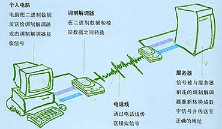

 计算机内的信息是由“0”和“1”组成数字信号，而在电话线上传递的却只能是模拟电信号。于是，当两台计算机要通过电话线进行数据传输时，就需要一个设备负责数模的转换。这个数模转换器就是Modem。计算机在发送数据时，先由Modem把数字信号转换为相应的模拟信号，这个过程称为“调制”。经过调制的信号通过电话载波传送到另一台计算机之前，也要经由接收方的Modem负责把模拟信号还原为计算机能识别的数字信号，这个过程称为“解调”。正是通过这样一个“调制”与“解调”的数模转换过程，从而实现了两台计算机之间的远程通讯。